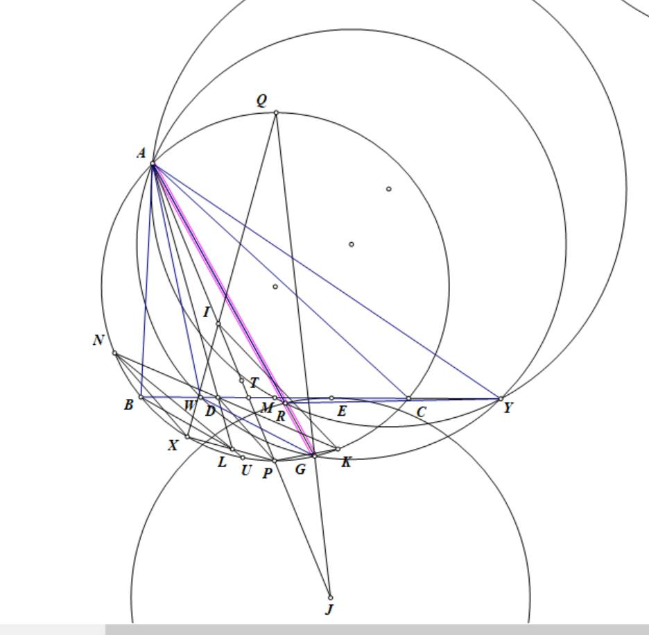

Example from a problem I solved
Problem (Source: Plane Geometry group on Facebook): Let triangle \(ABC\) be inscribed in circle \((O)\), with \(B, C\) fixed and \(A\) moving on the major arc \(BC\) of \((O)\). Let \((I)\) be the incircle of the triangle, tangent to \(BC\) at \(D\). Line \(AI\) meets \((O)\) again at \(P\). Let \((T)\) be the internal \(A\)-mixtilinear circle, tangent to \((O)\) at \(X\). Segment \(XP\) meets \(AD\) at \(L\). a) Prove: \(L\) lies on \((T)\). b) Let \(K\) be the reflection of \(A\) across line \(OI\). Let \(KD\) meet \((O)\) again at \(N\), and let \(NL\) meet \((O)\) again at \(J\). Prove: \(AJ\) always passes through a fixed point.
Illustration:

Solution:
(Using the first figure) Redefine point \(L\) as the intersection of \(AD\) and the \(A\)-mixtilinear circle. Let \(NL\) meet \((O)\) at \(U\) such that \(U\) is not the diametral opposite point.
Figure 1:
Let \(J\) be the excenter of triangle \(ABC\) that is tangent to \(BC\) at \(E\); then \(AX\) and \(AE\) are isogonal (a familiar result). Let line \(XI\) meet \((O)\) at \(Q\), the midpoint of arc \(BAC\) of \((O)\). Then \(JQ\) meets \((O)\) at \(G\), and we have \(AD\) and \(AG\) are isogonal (another standard result).
The perpendicular bisector of \(AJ\) meets \(BC\) at \(W\). Denote the three excenters of triangle \(ABC\) by \(I_A, I_B, I_C\), and let \(V\) be the circumcenter of the triangle formed by these three excenters. Then \(W\) lies on the radical axis between \((JV)\) and \((JI)\). Hence \(JW\) is perpendicular to \(IV\); note that \(IV\) is the Euler line of the triangle formed by the three excenters, whose circumcenter is \(O\). Therefore \(JW\) is perpendicular to \(OI\), so \(JW \parallel AK\). On the other hand, \(WJ = WA\), thus \(AW\) and \(AK\) are isogonal.
Consider inversion centered at \(A\) with power \(AB\cdot AC\), combined with reflection across the bisector of \(\angle BAC\). Under this transformation we obtain:
- The internal \(A\)-mixtilinear circle maps to \((J)\) (the excenter circle). - \(K\) maps to \(W\). - \(D\) maps to \(G\). - \(X\) maps to \(E\). - \(P\) maps to \(T\) (the intersection of \(AI\) with \(BC\)). - \(N\) maps to \(Y\) (the intersection of \((AGW)\) with \(BC\)). - \(L\) maps to \(R\) (the intersection of \(AG\) with \((J)\); point \(R\) lies closer to \(A\)). - \(U\) maps to \(M\) (the intersection of \((ARY)\) with \(BC\)).
Thus the problem is equivalent to proving:
1. That \(X, L, P\) are collinear, which is equivalent to showing that \(A,T,R,E\) are concyclic. 2. That \(AU\) passes through the intersection of the two tangents at \(B\) and \(C\) to \((O)\); equivalently, that \(AU\) is a symmedian, or that \(M\) (the intersection of \((ARY)\) with \(BC\)) is the midpoint of \(BC\).
(Using the second figure) Transforming the above into the configuration with an incircle, we restate the problem as follows:
Figure 2:

Triangle \(ABC\) is inscribed in \((O)\) and has incircle \((I)\). Line \(AI\) meets \(BC\) at \(T\), and \((I)\) is tangent to \(BC\) at \(D\). Let \(G\) be the tangency point of the \(A\)-mixtilinear circle with \((O)\). Then:
- \(AG\) meets \((I)\) at \(R\) (the point \(R\) is closer to \(G\)). - The circle \((AGW)\) meets \(BC\) at \(Y\).
We need to prove:
1. \(A,R,D,T\) are concyclic. 2. The circle \((ARY)\) bisects segment \(BC\).
Proof (a): Let \(AG\) meet \((I)\) a second time at \(H\). Since \(GI\) is the bisector of \(\angle AGD\), quadrilateral \(IHGD\) is cyclic. Therefore: \[ \angle ARD = 90^\circ + \angle IHD = 90^\circ + \angle IGA = 90^\circ + \angle DIT = 180^\circ - \angle ATD, \] hence \(A,R,D,T\) are concyclic (Q.E.D.).
Proof (b): It is clear that \(R\) is the reflection of \(D\) across line \(GI\), so \(GR = GD\). Let \(MI\) meet \(BC\) at \(N\), and let \(GI\) meet \((O)\) at \(M\). Let \(AI\) meet \((O)\) at \(X\). Then: \[ \angle AIN = \angle MIT = \angle IVX = \angle NAI, \] so \(NA = NI\). Let \(U\) be the center of \((AIG)\); then \(U\) lies on \(MN\), and \[ \angle UIA = 90^\circ - \angle AGI = \angle ACX = \angle ATB, \] so \(UI \parallel BC\). Let \(AG\) meet \(UI\) and \(BC\) at \(Z\) and \(J\) respectively; then \[ \frac{WJ}{WM} = \frac{UZ}{UI}. \] Let \(GD\) meet \((O)\) at \(S\), and choose a point \(A'\) on \(GS\) with \(GA' = GA\). Then: \[ \triangle ZUA \sim \triangle AGS, \quad \triangle AUI \sim \triangle AGA', \] which yield \[ \frac{WJ}{WM} = \frac{UZ}{UI} = \frac{GA'}{GS} = \frac{GA}{GS} = \frac{GJ}{GD} = \frac{GJ}{GR}. \] Hence \(MR \parallel WG\), so \[ \angle RMY = \angle YWG = \angle YAR, \] and therefore \(A,R,Y,M\) are concyclic, as desired. Therefore, the problem is proven
Therefore, the problem is handled by using inversion centered at \(A\) with power \(AB\cdot AC\) combined with reflection about the bisector of \(\angle BAC\) to manage the originally difficult tangency conditions.